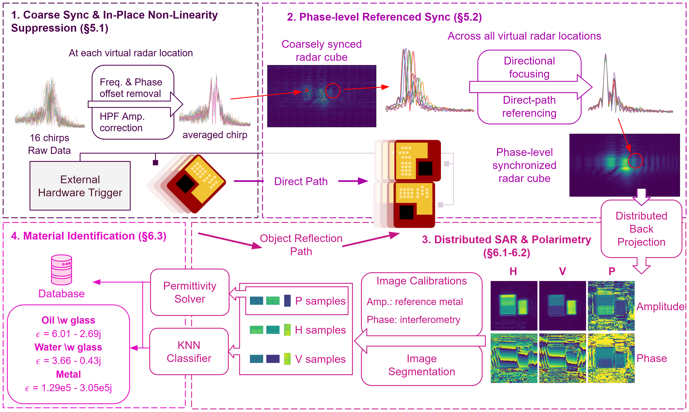
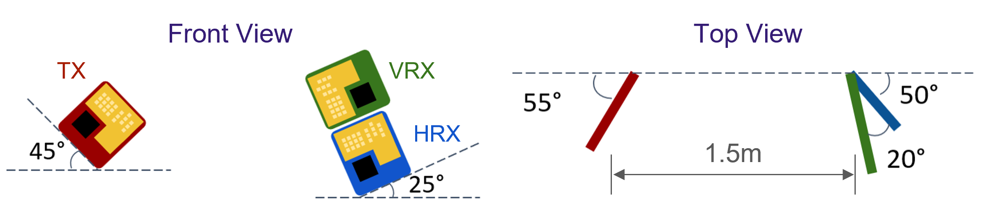
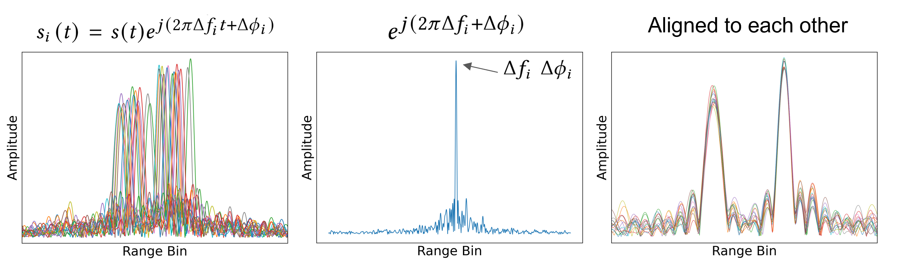
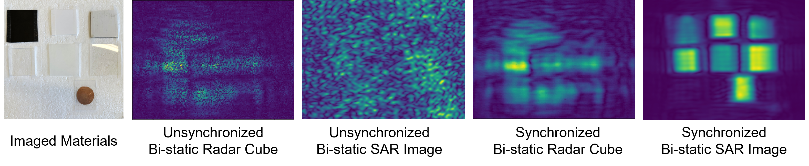
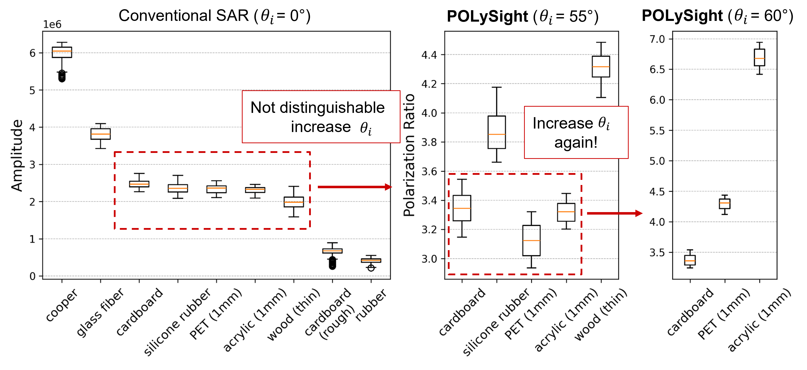
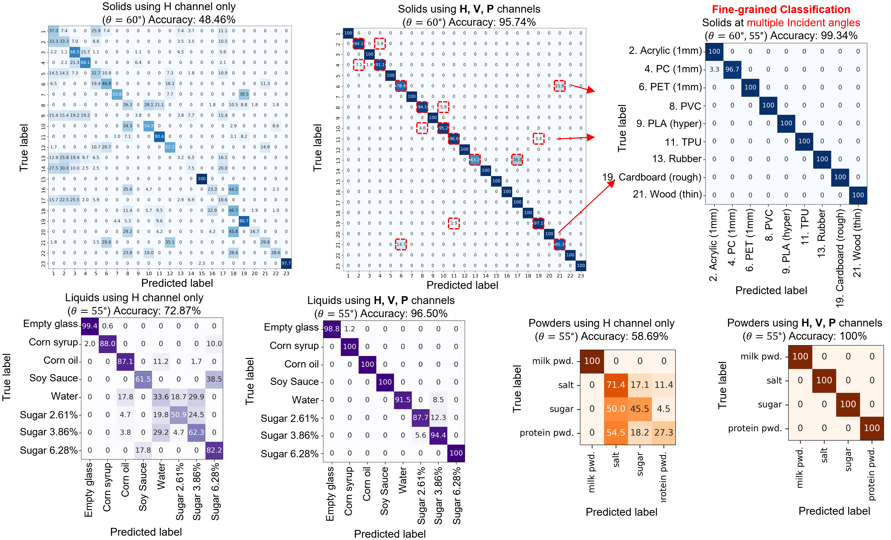

Accurately identifying materials in real-world environments is critical for applications in robotics, security screening and autonomous systems. While more expensive approaches for material characterization such as spectroscopy or ellipsometry are ill-suited for large scale deployment, RF-based solutions present a new potential low-cost alternative. Prior RF-based material sensing approaches are either too invasive, suffer from lower resolution or are highly specialized in particular materials, presenting a need for a more general-purpose solution.
This paper presents POLySight, a mmWave radar based material sensing solution that uses the polarization of signals reflected from target objects. POLySight synthesizes a wide-aperture bi-static mmWave radar system by synchronizing distributed commodity radars to extract polarimetry at large incidence angles. The solution extracts the high-resolution polarimetric image of the object from these synchronized measurements by performing synthetic aperture radar (SAR) based imaging. Finally, we leverage the ratio of the amplitude in co-polarized and cross-polarized received signals to classify solids, liquids and powders. Our evaluation across 36 different materials demonstrates an accuracy of 95.74%, 96.50% and 100% for classifying 23 solids, 8 liquids and 4 powders, and a median error of 1.548% in determining the concentration of a sugar-water solution.

POLySight system pipeline: synchronized bi-static radars capture H and V polarization channels at large incidence angles, SAR imaging forms high-resolution reflectivity maps, and KNN classification identifies materials from their polarimetric signatures.
Conventional mmWave SAR images materials by their reflectivity, but many everyday materials such as acrylic, PET, and copper exhibit nearly identical reflectivity at normal incidence. To a mono-static radar (incident angle = 0°), they look the same. At normal incidence the reflectivity is dominated by the real part of the material's permittivity, which is similar across many materials, and the phase change of the reflected signal is nearly zero. The reflected signal is also largely shaped by surface geometry such as shape and distance, which is mostly insensitive to material properties.
Our key insight is that the polarization response of a material changes dramatically with the incidence angle. The contrast between materials grows sharply near each material's Brewster's angle, which is typically between 55° and 65°.
Acrylic and PET are indistinguishable in a front-on (0°) polarimetric image, but become clearly separable at high incidence angles near the Brewster's angle.
Exploiting this insight is hard in practice. Capturing reflections at incidence angles between 55° and 65° requires the transmitter and receiver antennas to be separated by roughly a meter. POLySight therefore has to turn multiple commodity radars into a single distributed bi-static radar. We use one transmitter radar and two orthogonally placed receiver radars separated about 1.5 m away on a 2D motion stage to synthesize a wide aperture.

Distributed bi-static placement: a 45°-tilted TX and two orthogonally polarized RX radars separated by ~1.5 m to reach high incidence angles.
Commodity radars are not designed for distributed operation, we use the SYNC_IN pin to trigger the radars simultaneously, but this only achieves coarse synchronization. The chanenl of each chirp is subject to independent random frequency, phase and amplitude offsets that destroy the coherence needed for SAR imaging.

POLySight repurposes the direct over-the-air path between the radars (interference) as a per-chirp reference. We isolate this direct path using receive-side beamforming and use its peak to compensate every chirp.

Without per-chirp phase synchronization the SAR image is completely defocused; referencing the direct path between radars recovers a sharp, high-resolution image.
We evaluated POLySight on 36 materials spanning 23 solids, 8 liquids, and 4 powders. We imaged each material at a high incidence angle of 50° to capture their polarimetric signatures.

SAR images at θi = 50°: horizontal (H), vertical (V), and polarization-ratio (P) channels across 7 materials. The P channel reveals material contrast invisible to H or V alone.
To confirm that the contrast really comes from polarimetry at high incidence angles, we image the same materials at three angles: the conventional mono-static 0°, 55°, and 60°. At 0° only a few materials with extreme permittivity (copper, rubber, glass fiber) stand out and the rest collapse onto each other. At 55° the contrast already grows substantially. At 60°, which is close to acrylic's Brewster angle, cardboard, PET, and acrylic finally separate cleanly. This is the "Goldilocks zone" that motivates POLySight's bi-static design.

We then evaluate POLySight's pixel-wise classification accuracy on 36 materials spanning 23 solids, 8 liquids, and 4 powders, using a weighted KNN over the calibrated H, V, and P channels. Using only the horizontal channel is analogous to a conventional mmWave SAR. Adding polarimetry boosts solid classification from 48.46% to 95.74%, liquids from 72.87% to 96.50%, and powders from 58.69% to 100%. Capturing a second incidence angle further pushes the solid accuracy to 99.34%.

Confusion matrices for pixel-wise material classification. POLySight achieves 95.74% accuracy across 23 solids (improving to 99.34% with two incidence angles), 96.50% on 8 liquids, and 100% on 4 powders.
| Materials | ε′ | −jε″ |
|---|---|---|
| Solids (1–19) | ||
| 1. Metal | 1.29e5 | 3.05e5 |
| 2. Acrylic (1 mm) | 3.56 | 0.18 |
| 3. Acrylic (3 mm) | 4.00 | 0.40 |
| 4. Polycarbonate (1 mm) | 4.26 | 0.21 |
| 5. PET (0.5 mm) | 3.78 | 0.70 |
| 6. PET (1 mm) | 3.83 | 0.73 |
| 7. Vinyl (0.37 mm) | 3.65 | 0.70 |
| 8. PVC | 4.15 | 0.81 |
| 9. PLA (ender, 1 mm) | 3.79 | 0.34 |
| 10. PLA (hyper, 1 mm) | 4.21 | 0.30 |
| 11. TPU (1 mm) | 3.91 | 0.21 |
| 12. Ceramic | 4.75 | 2.43 |
| 13. Rubber | 5.06 | 1.11 |
| 14. Silicone Rubber | 3.52 | 0.82 |
| 15. Glass (2 mm) | 7.26 | 0.85 |
| 16. Glass Fiber | 4.69 | 0.70 |
| 17. Paper (smooth) | 4.63 | 0.31 |
| 18. Cardboard | 5.24 | 0.01 |
| 19. Cardboard (rough) | 4.54 | 0.56 |
| Materials | ε′ | −jε″ |
|---|---|---|
| Solids (20–23) | ||
| 20. Fabric | 2.21 | 0.13 |
| 21. Wood (thin, smooth) | 2.61 | 0.71 |
| 22. Wood (rough) | 5.02 | 0.81 |
| 23. Cork | 10.6 | N/A |
| Liquids | ||
| 24. Soy Sauce (w/ glass) | 4.30 | 0.53 |
| 25. Corn Oil (w/ glass) | 6.01 | 2.69 |
| 26. Corn Syrup (w/ glass) | 6.42 | 0.05 |
| 27. Water (w/ glass) | 3.66 | 0.43 |
| 28. Cane Sugar (1.3%, w/ glass) | 3.72 | 0.43 |
| 29. Cane Sugar (3.8%, w/ glass) | 3.78 | 0.44 |
| 30. Cane Sugar (5.1%, w/ glass) | 3.81 | 0.43 |
| 31. Cane Sugar (6.3%, w/ glass) | 3.89 | 0.41 |
| 32. Cane Sugar (7.4%, w/ glass) | 3.96 | 0.39 |
| Powders | ||
| 33. Sugar Powder (w/ plastic) | 4.46 | 0.42 |
| 34. Salt (w/ plastic) | 4.30 | 0.94 |
| 35. Protein Powder (w/ plastic) | 5.74 | 0.45 |
| 36. Milk Powder (w/ plastic) | 4.88 | 0.74 |
Estimated permittivity ε = ε′ − jε″ at 76–81 GHz across 36 materials spanning solids, liquids, and powders.
If you find this work useful, please consider citing our paper!
@inproceedings{polysight,
author = {Sun, Xinghua and Gadre, Akshay},
title = {Towards Practical Bi-Static Polarimetric Imaging Using Commodity mmWave Radars for Material Sensing},
booktitle = {Proceedings of the ACM/IEEE International Conference on Embedded Artificial Intelligence and Sensing Systems (SenSys '26)},
year = {2026},
doi = {10.1145/3774906.3800470},
publisher = {ACM},
address = {New York, NY, USA},
month = {May},
} University of Washington
University of Washington